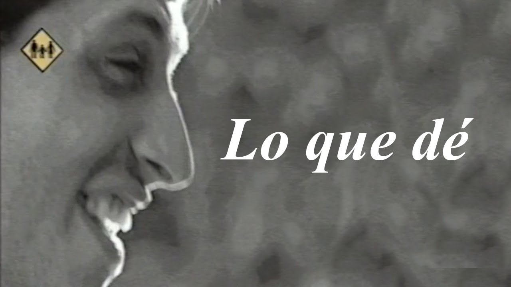
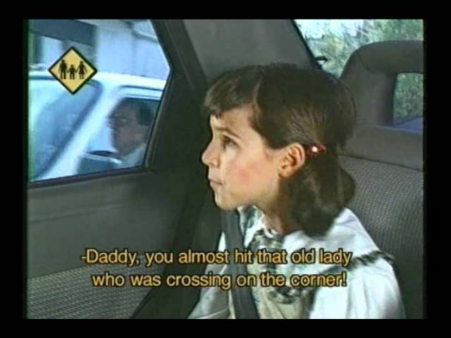

Educación Vial
La seguridad vial es crucial para reducir accidentes de tráfico y proteger vidas. Este trabajo práctico aborda las causas principales de los accidentes, medidas preventivas y el rol de las políticas públicas. Analizaremos estadísticas y casos de estudio para entender mejor las dinámicas involucradas y proponer soluciones efectivas. Nuestro objetivo es fomentar una cultura vial responsable que minimice riesgos y salve vidas.
Público Objetivo
Conductores de todas las edades: Especialmente jóvenes y nuevos conductores, quienes tienen menos experiencia al volante. Peatones: Personas que caminan en áreas urbanas y rurales, incluyendo niños y adultos mayores. Ciclistas y motociclistas: Usuarios vulnerables de la vía que necesitan ser conscientes de las normas y precauciones. Educadores y padres: Aquellos que influyen en las conductas viales de niños y adolescentes. Empresas y empleados: Especialmente aquellos que dependen del transporte para sus actividades laborales. Autoridades y responsables de políticas públicas: Quienes pueden implementar cambios estructurales y legislativos para mejorar la seguridad vial.
Identidad Visual
Hemos utilizado colores sobrios como violeta oscuro, gris y blanco. Incorporamos elementos gráficos como señales de tráfico, siluetas de personas y vehículos. Elegimos una tipografía legible y moderna. Incluimos imágenes y videos impactantes. Promovimos conductas responsables.